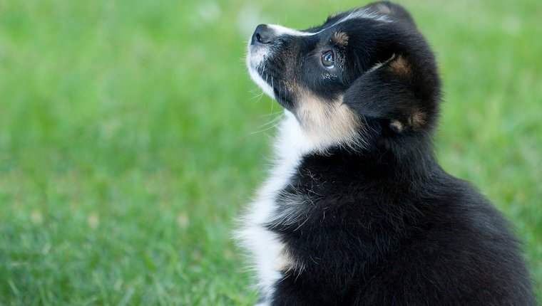
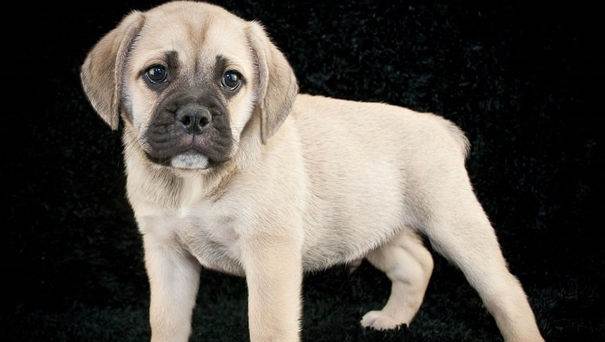
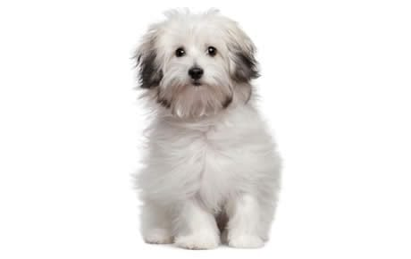

Auggie
The Auggie is a mixed breed dog a cross between the Australian Shepherd and Corgi, and typically, the Miniature Australian Shepherd and the Pembroke Welsh Corgi. Friendly, energetic, and playful, these mixed breed herding dogs make great companions for the whole family.
Barbado da Terceira

The Barbado da Terceira dog breed was developed on the Portuguese island of Terceira to work herding cattle and guarding livestock. Today this medium-sized breed is known for being loyal and smart.
Beabull
The Beabull is a mixed breed dog — a cross between the Beagle and the English Bulldog breeds. Loyal, curious, and loving, these pups inherited some of the best qualities from both of their parents.
Berger Picard

Also known as the Picardy Shepherd, the Berger Picard dog breed is thought to be the oldest of the French sheepdogs. Their scruffy looks and lively intelligence have won them plenty of fans over the centuries, and more recently, they have won movie roles.
Bichon Frise

TThe Bichon Frise (pronounced BEE-shawn FREE-say; the plural is Bichons Frises) is a cheerful, small dog breed with a love of mischief and a lot of love to give. With their black eyes and fluffy white coat, the Bichon looks almost like a child's toy.
Bolognese
TA true companion dog, the Bolognese dog breed loves to be at their family's side. However, they also loves getting their way and can be quite crafty about it, so be careful — you could find yourself being manipulated by a ten-pound furball.